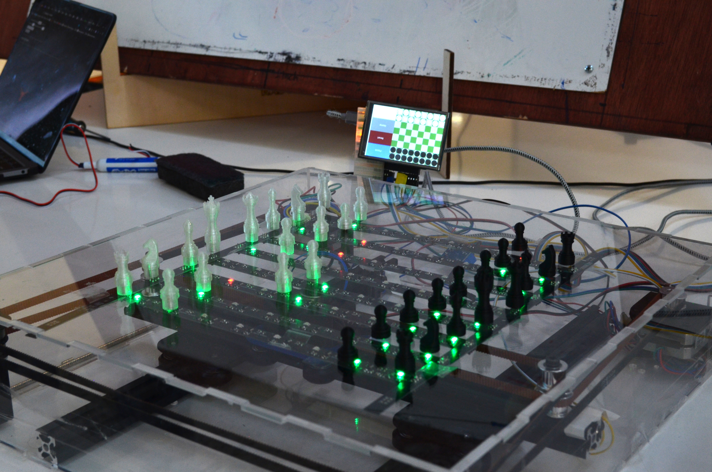

I developed an embedded interface and display in C for an XPT2046 LCD to be used for Chessbot, a project in the Demobots committee of IEEE RAS. Chessbot is an automated chess-playing robot using a two-axis electromagnet gantry system to move magnetic chess pieces and an MQTT communication architecture that processes the controls and logic of the robot, such as evaluating the current state of the chess pieces and making chess engine API calls. However, the states of chess pieces are enclosed within the robot’s game simulation program, and it needed a physical interface to provide the player real-time visualization of the game simulation and control commands over the robot if the game needs to be halted. The interface and display was implemented with Little Video Graphics Library, a low-power and low-memory embedded graphics framework, and MQTT topic subscriptioms that read from the chessboard state topic and write to the stepper motor topic in order to display the locations of the current chess pieces and allow users to pause the game or home the gantry system back to the origin. Throughout the robot’s development, I also collaborated with the electrical team in assembling our custom PCBs, as well as the mechanical team in prototyping a chassis for the robot and harnessing the wires and hardware components in the chassis. https://ras.ece.utexas.edu